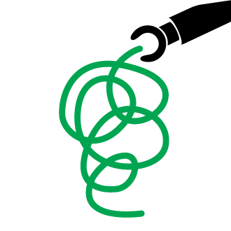

Here are some of my active and recent projects. For background on my previous affiliations and projects, see my LinkedIn profile.
Build Peace
Build Peace is a conference that brings together practitioners, activists and technologists from around the world to share experience and ideas on using technology for peacebuilding and conflict transformation. Over the course of two days, we will explore how information and communications technologies, games, networking platforms and other tools can enhance the impact of a broad range of peacebuilding, social cohesion and peace advocacy initiatives. Build Peace is being held at the MIT Media Lab on April 4 and 5, 2014.
Creative Industries Prototyping Lab
The Creative Industries Prototyping Lab is a three-day event where graduate researchers facilitate a series of collaborative and interdisciplinary lectures, workshops and design sessions oriented at thinking and building digital creative industries. Facilitators lead local participants through the potentials and challenges of working in the digital creative industries, and work through a process of critical technology design. The first CIPL will be held in Lima, Peru, in April 2014.
Civic Crowdfunding Research Project
The Civic Crowdfunding Research Project was established at MIT’s Center for Civic Media in 2013 to advance socially-grounded research into crowdfunding for civic and community projects. In Spring 2014, the project will publish the Civic Crowdfunding Toolkit, a guide to alternative fundraising strategies for non-profits and public sector organizations.